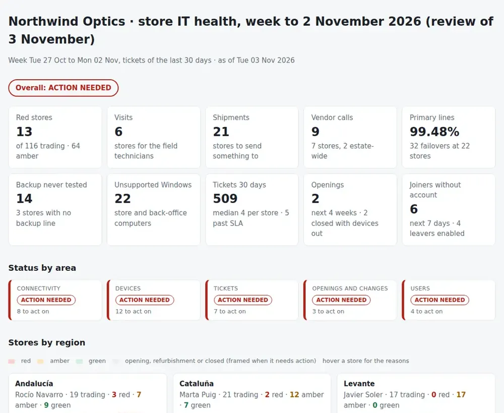

Una tienda de centro comercial saltó a su router 4G de respaldo nueve veces en una semana y siguió vendiendo, y nadie se dio cuenta de que su SIM de respaldo iba por el 93% de su límite de datos hasta que el router se quedó sin velocidad un sábado por la tarde. Así lo detecta la revisión semanal del IT de tiendas que acompaña a este post, una herramienta de código abierto que se ejecuta con datos de ejemplo de una cadena de ópticas inventada con 122 tiendas en España y Portugal, entre tiendas de calle, centros comerciales y córners dentro de unos grandes almacenes, revisada un martes por la mañana con los problemas puestos a propósito.
El IT central de una cadena ve sus tiendas a través de una consola de monitorización, un listado de equipos y una cola de tickets, y en ninguna de ellas hay nadie de informática. La herramienta asigna cada problema a una tienda y dice lo que necesita: una visita del técnico de campo, un envío, una llamada al proveedor o trabajo en remoto. Así la lista de cada técnico sale de las comprobaciones en lugar de escribirse a mano, ordenada por región.
Catorce routers de respaldo sin probar y una región que pierde el túnel a las ocho
Catorce routers de respaldo no se han probado nunca. Todas las tiendas de una región pierden el túnel con la central, la conexión permanente entre la tienda y los sistemas centrales, hacia las ocho de la tarde, y el service desk lo registra como diecisiete problemas distintos cuando es una sola causa. Un córner dentro de unos grandes almacenes abre en diez días y su línea sigue sin instalar, porque el operador no puede pasar del cuarto de comunicaciones de los grandes almacenes.
Las comprobaciones de conectividad incluyen la disponibilidad de la línea principal en la semana frente a la anterior, el tiempo en respaldo, las tiendas sin línea de respaldo, las SIM cerca de su límite y las conexiones fallidas de la VPN AnyConnect.
Un modelo de impresora de tickets que se atasca en tres tiendas
Tres tiendas con el mismo modelo de impresora de tickets acumulan atasco tras atasco, lo que lo convierte en una llamada al proveedor y no en tres reparaciones. Una tienda abre cuatro veces la mediana de tickets de la red, casi todos porque las PDA pierden el Wi-Fi en el almacén. Dos tiendas cerraron hace semanas con los portátiles y los datáfonos todavía dentro, y dos personas empiezan mañana sin cuenta.
La revisión comprueba también los PC sin sincronizar o con un Windows sin soporte, las impresoras desconectadas o con poco tóner, los datáfonos que no reportan y los SAI que han fallado su autotest. Los tickets cubren los últimos treinta días, y uno en espera del proveedor no cuenta para el SLA. Las tiendas en reforma no se revisan hasta que reabren.
Cómo usarlo con datos reales
Los datos de conectividad e impresoras son exportaciones de la herramienta de monitorización, y el estado y el tóner de las impresoras salen de los objetos SNMP estándar de impresora. El repositorio incluye un exportador de solo lectura en PowerShell para Microsoft Graph, Active Directory y Entra ID, y funciona con Python y solo la librería estándar. Genera un estado por tienda con sus motivos, una cuadrícula de tiendas por región, una lista de visitas y envíos por técnico de campo, un informe para la reunión semanal de operaciones de tienda con la tendencia frente a la semana anterior y ficheros CSV. Incluye 14 tests y un runbook. La cadena y sus tiendas son ficticias. La herramienta no es la comprobación de preparación de un local ni el seguimiento de la preapertura de un hotel publicados antes: cubre toda una red de tiendas, semana tras semana.
De dónde sale
La herramienta nace de dar soporte a las boutiques y puntos de venta de marcas de lujo, de unas 200 preaperturas de córners de marca dentro de grandes almacenes, de Intune y Microsoft Graph y de ser responsable de los procesos de incidencias y cambios. En una de esas aperturas la conectividad se cayó dos horas antes de abrir, y volví a dar servicio al córner con un router USB 4G provisional mientras revisaba el cuarto de comunicaciones de la planta con los técnicos de los grandes almacenes. La lección: una tienda en respaldo está a un fallo de no poder vender, y un respaldo sin probar es solo una esperanza.
¿Quieres llevarlo a tu entorno o adaptarlo a tu caso? Escríbeme y lo vemos.
Tech Career Lab · newsletter
¿Te ha servido? Cada dos semanas envío una idea práctica para perfiles IT: LinkedIn, proyectos, networking y procesos de selección.
Apúntate y llévate las 33 ideas →